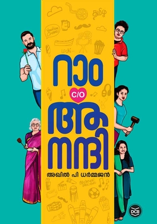

Ram c/o Aanandi book review

റാം c/o ആനന്ദി എന്ന നോവലിന് കേന്ദ്ര സാഹിത്യ അക്കാദമി അവാർഡ് കിട്ടിയ വിവരം എനിക്ക് തികച്ചും ആശ്ചര്യകരമായിരുന്നു. നോവൽ ഞാൻ കുറച്ചുനാൾ മുൻപ് വായിച്ചതാണ്, ആദ്യമേ പറയട്ടെ ഇത് ഒരു ശരാശരി നോവൽ ആണെന്നാണ് എന്റെ അഭിപ്രായം. ആ നിലവാരത്തിൽ എനിക്ക് ഈ നോവൽ ഇഷ്ടപ്പെട്ടു. നാടകീയതയും ഗൃഹാതുരത്വവും വാരി വിതറിയ വിനീത് ശ്രീനിവാസന്റെ "ഹൃദയം" എന്ന സിനിമ കണ്ട ഒരു ഫീൽ ആണ് എനിക്ക് ഇത് വായിച്ചപ്പോൾ കിട്ടിയത്. പല വീടുകളിലും ഈ നോവലിന്റെ കോപ്പി ഞാൻ കണ്ടിട്ടുണ്ട്. പലരുടെയും ഇൻസ്റ്റാഗ്രാം സ്റ്റാറ്റസിൽ നിന്നാണ് ഞാൻ ഈ നോവലിനെപ്പറ്റി അറിയുന്നത് തന്നെ. നോവൽ എത്ര മാത്രം പോപ്പുലർ ആയിരുന്നു എന്നത് ഇതിൽ നിന്നും തന്നെ ഊഹിക്കാം.
ഊഹം ചിലപ്പോളെക്കെ തെറ്റാമല്ലോ ? എന്നാൽ കണക്ക് നോക്കാം. വളരെ ചുരുങ്ങിയ കാലയളവിൽ ഈ നോവലിന്റെ മൂന്നു ലക്ഷത്തോളളം കോപ്പി ആണ് വിറ്റഴിക്കപ്പെട്ടത്. മലയാളിയായ ഏതൊരു നോവലിസ്റ്റിനെ സംബന്ധിച്ചും ഇത് ഒരു അഭിമാനകരമായ നേട്ടം ആണ്. ഈ നേട്ടം കൈവരിച്ച അഖിൽ പി ധർമജൻനും അദ്ദേഹത്തിന്റെ നോവൽ റാം c/o ആനന്ദിയും തീർച്ചയായും അഭിനന്ദനം അർഹിക്കുന്നു. 2020ൽ ഇറങ്ങിയ ഒരു മലയാളം നോവൽ ഇത്രയും കോപ്പി ഇത്ര ചുരുങ്ങിയ കാലയളവിൽ വിൽക്കുക എന്നത് അത്ര നിസ്സാര കാര്യമല്ല. 1993ൽ ഇറങ്ങിയ ആദ്യത്തെ പന്ത്രണ്ടു വര്ഷം കൊണ്ട് മലയാളത്തിലെ നിരവധി പബ്ലിഷിംഗ് റെക്കോർഡുകൾ തകർത്തെറിഞ്ഞ "ഒരു സങ്കീർത്തനം പോലെ" എന്ന നോവൽ ഇതുവരെ ഏകദേശം രണ്ടര ലക്ഷം കോപ്പികൾ മാത്രം ആണ് വിറ്റിട്ടുള്ളത്.
മലയാള സാഹിത്യം കൂടുതൽ ലളിതമാകുകയും, പുതു തലമുറയുടെ പൊതുവെയുള്ള വായനാശീലം പണ്ടത്തേതിൽ നിന്നും വളരെയധികം മെച്ചപ്പെടുകയും ചെയ്തു എന്നതിന് ഒരു പ്രത്യക്ഷമായ തെളിവായി ഈ പോപ്പുലാരിറ്റി നമുക്ക് എടുക്കാവുന്നതാണ്. പഴയ തലമുറയേക്കാൾ കൂടുതൽ വായിക്കുന്ന ഒരു തലമുറ ആണ് ഇന്നത്തേത് എന്ന് നിസംശയം പറയാം. ഒരു കാലത്ത് വായനയെ പുനരുജ്ജീവിപ്പിക്കാൻ വേണ്ടി നടന്നിരുന്ന പല പ്രവർത്തനങ്ങളും ഫലം കണ്ടതാണോ അതോ ഇതൊരു ഒരൊറ്റപ്പെട്ട സംഭവം ആണോ എന്നത് ഇനിയും പരിശോധിക്കേണ്ടിയിരിക്കുന്നു. ദൃശ്യ മാധ്യമങ്ങളുടെയും ഇന്റർനെറ്റിന്റെയും സ്വാധീനം മൂലം വായന മരിക്കുന്നു എന്ന മട്ടിൽ പലരും നടത്തിയിട്ടുള്ള വിലാപങ്ങൾ ഓർക്കുമ്പോൾ എനിക്ക് ഇന്ന് ചിരിക്കാൻ ആണ് തോന്നുന്നത്.
പോപ്പുലാരിറ്റി അവിടെ നിൽക്കട്ടെ 2013ൽ കേന്ദ്ര സാഹിത്യ ആക്കാഡമി അവാർഡ് നേടിയ ഞാൻ വായിച്ചിട്ടുള്ള മറ്റൊരു പുസ്തകം ആണ് കെ. ആർ മീരയുട "ആരാച്ചാർ". ഗംഭീരമായ ഭാഷയും, പലവിധമായ അറിവുകളും, കാല്പനികതയും, ജീവിതവും മനോഹരമായി സമന്വയിപ്പിച്ച, പിടിച്ചിരുത്തുന്ന ആഖ്യാന ശൈലിയും ഉള്ള ഈ നോവലിന്റെ നേട്ടത്തിന്റെ ഒപ്പം കേവല നിലവാരം മാത്രമുള്ള റാം c/o ആനന്ദിയെ സങ്കല്പിക്കുവാൻ പോലും എനിക്ക് സാധിക്കുന്നില്ല. വായനക്കാർ കൂടുമ്പോൾ മൊത്തത്തിലുള്ള ജനങ്ങളുടെ വായനയുടെ നിലവാരം കുറയും എന്നത് സ്വാഭാവികം ആണ്, എന്നാൽ കേന്ദ്ര സാഹിത്യ അക്കാദമി പോലുള്ള പുരസ്കാരങ്ങൾക്ക് സാഹിത്യ കൃതികളുടെ നിലവാരം കാത്തു സൂക്ഷിക്കേണ്ടുന്നതായ ഒരു ബാധ്യത ഉണ്ട്.
അയാൾ കഥയെഴുതുകയാണ് എന്ന മോഹൻലാൽ സിനിമയിൽ പറയുന്ന "ഒരു ഗസറ്റഡ് യക്ഷി" പോലുള്ള നോവലുകൾ പൊതുവെ മനോരമയിലും മംഗളം വാരികയിലും ഒക്കെ പണ്ട് ഒരുപാട് വായിച്ചിട്ടുണ്ട്. മെഗാ സീരിയൽ യുഗത്തിന് മുന്നേ അതായിരുന്നു കേരളത്തിലെ വീടുകളിലെ പൊതു വിനോദം. ഇന്നിപ്പോൾ പ്രതിലിപി പോലുള്ള ആപ്പുകളിലും സോഷ്യൽ മീഡിയ പോസ്റ്റുകളിലും ഇഷ്ടം പോലെ ഇത്തരം പൈങ്കിളി സാഹിത്യ രചനകൾ ലഭ്യമാണ്. ഇന്ത്യയിൽ ഏറ്റവുമധികം മൊബൈൽ ഫോണും ഇന്റർനെറ്റും ഒക്കെ ഉപയോഗിക്കുന്ന മലയാളികളുടെ വായനാശീലം പുതു തലമുറയിലെ എഴുത്തുകാർ സമർത്ഥമായി ഉപയോഗിക്കുന്നത് ഞാൻ എന്നും പോസിറ്റീവ് ആയിട്ട് ആണ് കണ്ടിട്ടുള്ളത്. ആളുകളെ വായനയിലേക്ക് അടുപ്പിക്കാൻ ഇത് തീർച്ചയായും സഹായിക്കും. എന്നാൽ വായനക്കാർക്ക് ഇത്തരം പുരസ്കാരങ്ങൾ ലഭിച്ച കൃതികൾ തങ്ങളുടെ നിലവാരത്തിന്റെ ഒരു അളവുകോൽ (benchmark) തന്നെയാണ്. ആ അളവുകോൽ നിർണയിക്കുന്ന സാഹിത്യ അക്കാഡമികൾ ഉന്നത നിലവാരം പുലർത്തേണ്ടതുണ്ട്. ചേതൻ ഭഗത്ത് നെ പ്പോലുള്ളവരുടെ ശൈലിയിൽ യുവത്വത്തെ ആകർഷിക്കുന്ന ഒരു ശരാശരി നോവൽ പോപ്പുലാരിറ്റിയുടെ പേരിൽ കേന്ദ്ര സാഹിത്യ അക്കാഡമിയുടെ പുരസ്കാരം നേടുക എന്നത് ആ അക്കാഡമിയുടെ നിലവാരത്തകർച്ച തന്നെയല്ലേ ?
പ്രാദേശിക ശൈലികളെ അംഗീകരിച്ചുകൊണ്ട് തന്നെ പറയുന്നു പത്രം അടക്കമുള്ള പ്രിന്റ് മീഡിയയിൽ വരുന്ന തെറ്റുകളും യുക്തിരഹിതവും അനാകർഷകങ്ങളും ആയ പ്രയോഗങ്ങളും ഇന്ന് പണ്ടത്തേക്കാൾ കൂടുതലാണ്. സ്കൂളുകളിലും അധികാരകേന്ദ്രങ്ങളിലും മറ്റും പ്രാദേശിക ഭാഷകൾക്കെതിരെ നടക്കുന്ന സംഘടിതമായ നിരുത്സാഹപ്പെടുത്തലിന്റെ ഇരയാണ് നമ്മുടെ മലയാളവും. ഇത്തരം പ്രവണതകൾ സാഹിത്യപരമായി ഏറ്റവുമധികം പ്രതിഫലിക്കുക ഇന്റർനെറ്റ് ഉപയോഗത്തിൽ മുന്നിലുള്ള നമ്മുടെ മലയാളത്തിൽ തന്നെയാണ്. അത്തരം സംഘടിത ശ്രമങ്ങളുടെ ഒരു പ്രത്യക്ഷമായ അടയാളമായി ഈ പുരസ്കാരം മാറിപ്പോയതിൽ ഞാൻ ദുഖിക്കുന്നു.